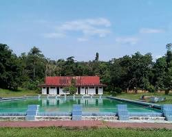

Sejarah
Kabupaten Kampar memiliki sejarah yang panjang dan kaya akan budaya. Dahulu, wilayah ini merupakan
bagian dari Kerajaan Pagaruyuang dan memiliki peran penting dalam sejarah Sumatera. Secara resmi,
Kabupaten Kampar dibentuk pada tanggal 6 Februari 1950. Kabupaten ini mengalami berbagai perubahan
wilayah dan perkembangan seiring berjalannya waktu. Dengan potensi alam yang melimpah, terutama di
sektor pertanian dan perkebunan, serta kekayaan budaya masyarakatnya, Kabupaten Kampar terus
berkembang hingga saat ini. Sungai Kampar menjadi ikon daerah ini, sementara produk unggulan seperti
sagu dan karet turut mewarnai perekonomiannya. Walaupun menghadapi berbagai tantangan, Kabupaten
Kampar terus berupaya meningkatkan kesejahteraan masyarakat dan melestarikan warisan budaya
leluhurnya.
Wisata
Stanum Bangkinang
Stanum Bangkinang merupakan salah satu destinasi wisata paling populer di Kampar. Tempat ini
menawarkan beragam wahana permainan air yang seru dan menyenangkan, mulai dari kolam renang dengan
berbagai ukuran hingga wahana permainan air modern lainnya. Selain itu, terdapat juga area bermain
anak-anak, spot foto yang menarik, dan kuliner yang menggugah selera. Stanum Bangkinang sangat cocok
untuk dikunjungi bersama keluarga atau teman-teman.

Geografis
Geografi Kabupaten Kampar
Kabupaten Kampar, salah satu kabupaten di Provinsi Riau, memiliki karakteristik geografis yang unik
dan menarik. Letak geografis dan kondisi alamnya sangat mempengaruhi kehidupan masyarakat dan
potensi sumber daya alam yang ada.
Letak Geografis
Koordinat: Terletak antara 01°00'40” Lintang Utara sampai 00°27'00” Lintang Selatan dan 100°28'30” –
101°14'30” Bujur Timur.
Batas Wilayah:
Sebelah utara: Kabupaten Siak
Sebelah selatan: Kabupaten Kuantan Singingi
Sebelah timur: Kabupaten Pelalawan
Sebelah barat: Kabupaten Rokan Hulu dan Provinsi Sumatera Barat